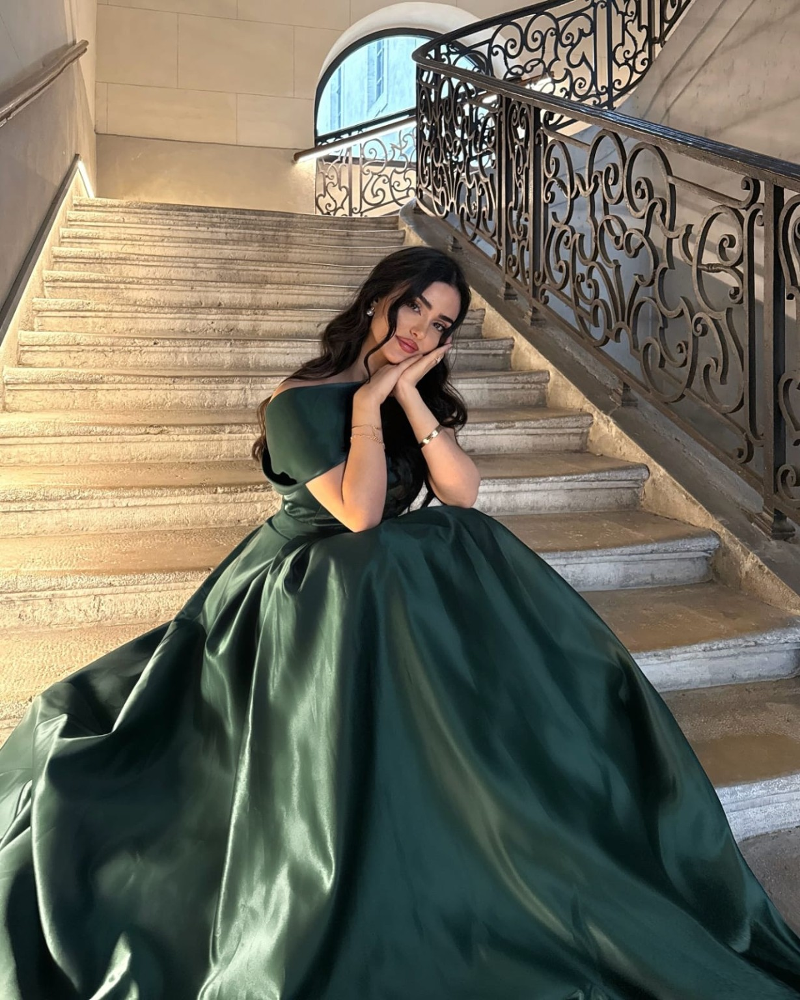
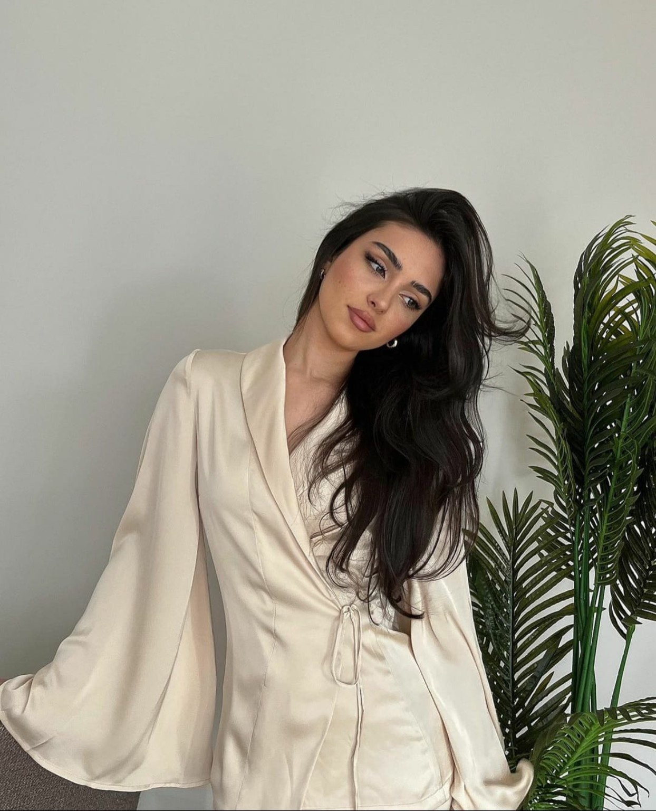
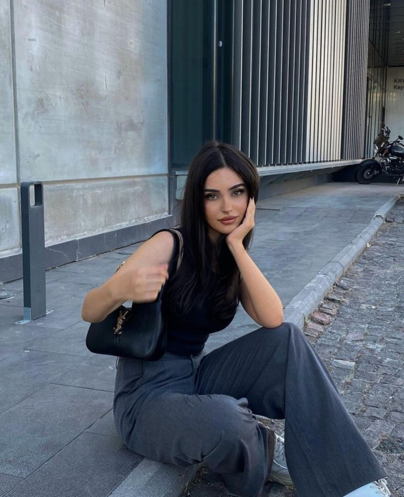
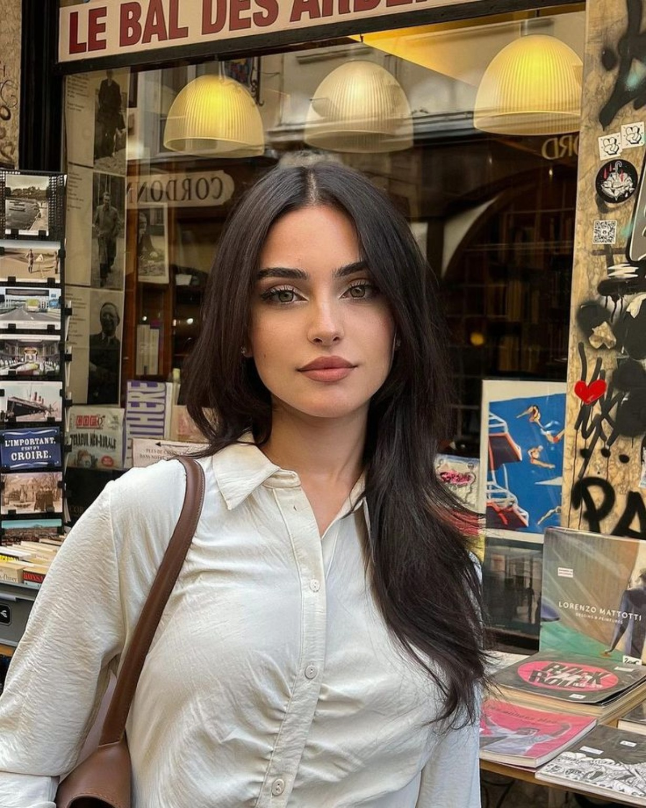
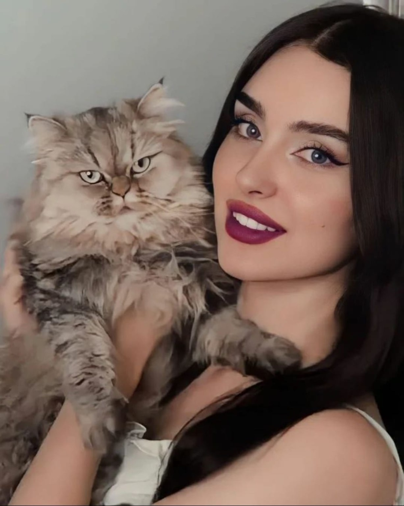

Diplomacia
Rebecca compreende a importância das palavras, dos gestos e dos silêncios nas relações sociais.
Lythael · A Seleção
Uma herdeira moldada pela diplomacia, pela ambição e pela consciência de que nem toda verdade está destinada a ser revelada. Entre interesses políticos e escolhas pessoais, Rebecca aprendeu que observar pode ser tão importante quanto agir.
Veritas in tenebris latet.

01 · A mulher por trás do nome
Aos vinte e cinco anos, Rebecca Devereaux ocupa uma posição privilegiada entre a elite influente de Lythael. Embora não pertença à família real, seu sobrenome carrega prestígio, responsabilidades e interesses que ultrapassam os limites da vida privada.
Diplomática, ambiciosa e estrategista, ela sabe transitar por ambientes sociais sem revelar tudo o que pensa. Sua participação na Seleção está ligada tanto a interesses políticos quanto pessoais.
Por trás da postura controlada existe uma mulher movida pela curiosidade, pelo conhecimento e pelo desejo de descobrir aquilo que outros prefeririam manter oculto.
02 · Entre a razão e a intenção
Nem tudo o que é demonstrado corresponde ao que é pensado.
Rebecca compreende a importância das palavras, dos gestos e dos silêncios nas relações sociais.
O desejo de avançar e ampliar o próprio conhecimento influencia suas escolhas e seus objetivos.
Antes de agir, ela observa. Antes de responder, considera as possibilidades e as consequências.
03 · O nome Devereaux
Afeto, prestígio e expectativas coexistem dentro de casa.
Influente e diplomático, Alexander preocupa-se com o prestígio da família e com a continuidade de seus interesses políticos e comerciais. Como pai, mantém com Rebecca uma relação afetuosa, embora as expectativas que deposita na filha façam parte de sua convivência.
Refinada e estratégica, Vivienne administra a casa e as alianças sociais que cercam a família. Sua influência se manifesta na atenção aos detalhes, nas relações cultivadas e na maneira como os Devereaux se apresentam à sociedade.
Filha única e herdeira dos interesses familiares, Rebecca mantém uma relação carinhosa com os pais, ainda que sua postura se torne mais formal quando está diante da sociedade.
04 · O que permanece quando ninguém observa
Preparar pratos caseiros e encontrar conforto nos sabores.
Escrever versos cuja forma acompanha seu estado emocional.
Uma expressão musical entre a disciplina e a sensibilidade.
Outra forma de encontrar expressão para o que não diz.
05 · Fragmentos de uma vida
Retratos e momentos de Rebecca Devereaux.




06 · Uma presença inesperada
De pelagem cinza volumosa e olhos verdes claros, Verso conquistou um lugar especial na vida de Rebecca. Afetuoso e apegado, gosta de dormir no colo dela, embora também preserve sua independência e prefira a própria cama.
Ele chegou durante a adolescência de Rebecca, deixado em seu quarto como um presente de um admirador secreto. Nenhuma explicação acompanhava o gato, e a identidade de quem o enviou permanece desconhecida.
O nome foi escolhido por Rebecca por sua ligação com a poesia. O significado pessoal que ela atribui a ele permanece reservado.
Arquivo reservado · Acesso restrito
Existe um capítulo da história de Rebecca ligado a uma instituição de pesquisa e aos registros da pandemia. Ao descobrir algo que a assustou, ela entrou em pânico e participou de um encobrimento.
Uma pessoa ligada à instituição conhece o segredo. O que exatamente foi descoberto e quais consequências isso poderá trazer continuam fora do alcance deste arquivo.
Alguns documentos dizem mais pelo que omitem.